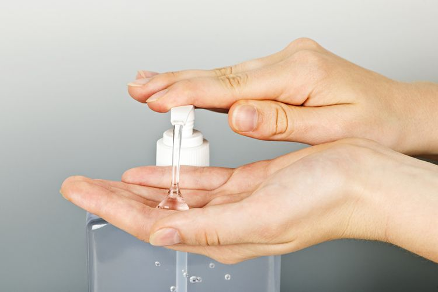
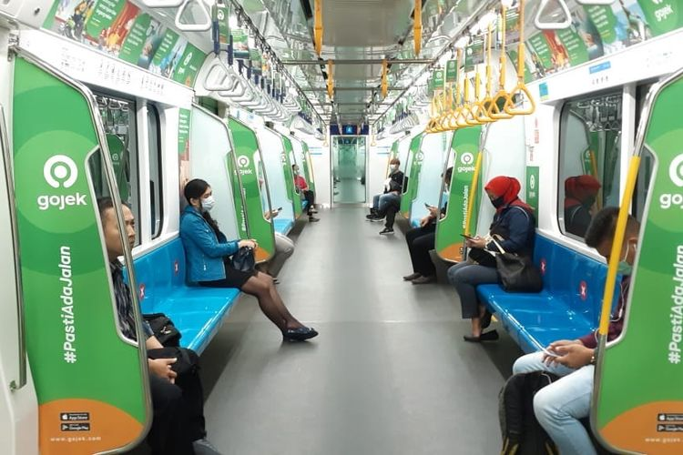

1. Sering Mencuci Tangan

Sering-seringlah mencuci tangan dengan sabun dan air yang mengalir selama 20 detik. Apabila sabun dan air tidak tersedia, gunakan pembersih tangan atau hand sanitizer yang mengandung setidaknya 60 persen alkohol. Dianjurkan untuk menghindari menyentuh mata, hidung, dan mulut Anda dengan tangan yang belum dicuci.
2. Social Distancing
Hindarilah kontak secara dekat dengan orang lain yang sedang sakit. Beri jarak antara diri Anda dan orang lain jika virus corona telah menyebar di komunitas Anda. Ini sangat penting bagi orang-orang yang berisiko lebih tinggi untuk sakit parah.
Satu di antara pencegahan penyebaran virus Corona yang efektif adalah jaga jarak sosial. Hal ini sebenarnya juga telah disuarakan oleh Pemerintah agar masyarakat jaga jarak fisik atau physical distancing. Dengan menerapkan physical distancing ketika beraktivitas di luar ruangan atau tempat umum, Anda sudah melakukan satu langkah mencegah terinfeksi virus Corona. Jaga jarak Anda dengan orang lain sekitar satu meter.
3. Gunakan Masker

Jika sakit, Anda harus mengenakan masker ketika berada di sekitar orang lain dan sebelum Anda memasuki kantor penyedia layanan kesehatan. Jika Anda tidak dapat memakai masker (misalnya, karena menyebabkan kesulitan bernapas), maka Anda harus melakukan yang terbaik untuk menutupi saat batuk dan bersin Anda. Selain itu, jika Anda sedang dirawat, orang yang merawat Anda harus memakai masker jika mereka memasuki ruangan Anda.
4. Stay At Home
Dengan tidak keluar rumah alias tetap berada di dalam rumah, akan meminimalisir Anda untuk terjangkit virus corona. Hal ini juga yang terus digalakkan oleh pemerintah agar penyebaran virus corona tidak meluas. Juru bicara pemerintah untuk penanganan virus corona Achmad Yurianto menyebut, anak muda berpotensi besar sebagai pembawa mikroorganisme SARS-CoV-2 yang menyebabkan Covid-19. Sebagai pembawa mikroorganisme, anak muda sangat mungkin menularkannya pada orang tua atau manusia usia lanjut (manula). Untuk itu, diimbau agar tetap berada di dalam rumah hingga wabah Covid-19 menghilang dari Indonesia.
5. Hindari Menyentuh Wajah

Tangan menyentuh banyak permukaan dan dapat mengandung banyak virus pula. Setelah terkontaminasi, tangan dapat memindahkan virus ke mata, hidung, atau mulut Anda. Dari sana, virus bisa masuk ke tubuh Anda dan bisa membuat Anda sakit.
6. Hindari Kerumunan
Tak hanya tempat umum, seperti tempat makan, gedung olah raga, tetapi tempat ibadah saat ini harus mengalami dampak tersebut. Tindakan tersebut adalah upaya untuk mencegah penyebaran virus corona. Untuk saat ini, dianjurkan lebih baik melakukan aktivitas di rumah agar pandemi virus corona cepat berlalu.
7. Tidak Berjabat Tangan
Dengan tidak melakukan jabat tangan, akan menghindarkan terjadinya kontak kulit. Hal itu akan sedikit mampu mencegah penyebaran virus corona. Untuk saat ini menghindari kontak adalah cara terbaik. Tangan dan wajah bisa menjadi media penyebaran virus corona.
Referensi: Kompas.com
Sumber gambar: https://unsplash.com/